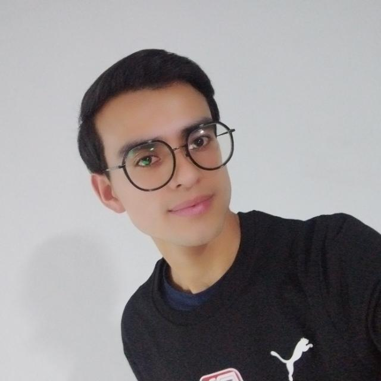
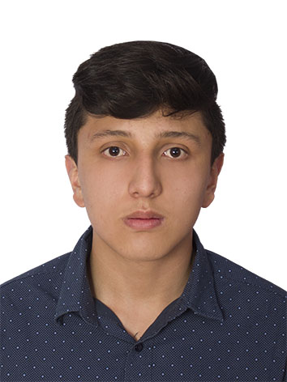

Sobre Nosotros
Ruta Salvaje es una plataforma digital que moderniza el turismo de aventura al digitalizar procesos de reserva antes manuales. Su solución integra tecnología para ofrecer planes estructurados y seguros, facilitando la exploración y toma de decisiones del usuario. El proyecto se centra en la usabilidad y la confianza, conectando a aventureros con experiencias al aire libre de manera rápida e intuitiva.
Equipo

Cristian Ariza
Desarrollador Full Stack con dominio en Java y Spring Boot, enfocado en la lógica de programación y bases de datos. Destaca por su orientación al detalle y responsabilidad personal, garantizando soluciones funcionales y entregas puntuales mediante un trabajo en equipo organizado y eficiente.
Linkedin
Jurany Ramírez
Desarrolladora Full Stack con dominio en Java, Spring Boot y tecnologías frontend. Destaca por su proactividad, mentalidad de crecimiento y habilidades de comunicación, facilitando la creación de soluciones innovadoras en equipos ágiles y comprometidos.
Linkedin
Leider Merchan
Desarrollador Web Junior experto en Java y Spring Boot con visión global de proyecto. Destaca por su capacidad analítica, proactividad y orientación al detalle, transformando requerimientos técnicos en soluciones funcionales mediante un trabajo en equipo asertivo y una mentalidad de crecimiento constante.
Linkedin